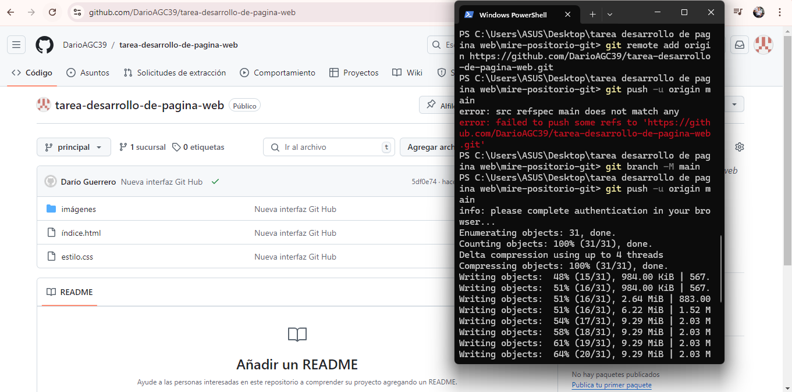
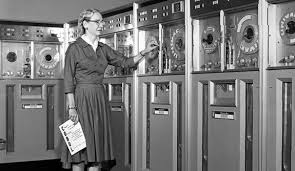

¿QUE ES GIT?
Git es un sistema de control de versiones distribuido que te permite gestionar y seguir los cambios en archivos y proyectos de software. Fue creado por Linus Torvalds en 2005 para el desarrollo del kernel de Linux.
Los desarrolladores que han trabajado con Git cuentan con una buena representación en la base de talentos disponibles para el desarrollo de software, y este sistema funciona a la perfección en una amplia variedad de sistemas operativos e IDE (entornos de desarrollo integrados).
¿QUE PUEDES HACER EN GIT?
- Crear ramas a partir de la copia principal de archivos en los que tú (y tus colaboradores) estáran trabajando.
- Realizar modificaciones en los archivos de forma independiente y segura en tu propia rama personal.
- Dejar que Git fusione mediante combinación y de forma inteligente los cambios específicos en la copia principal de archivos,
de modo que los cambios no afecten a las actualizaciones de otras personas. - Dejar que Git realice un seguimiento de tus cambios y los de otras personas, por lo que todos siguen trabajando en la versión más actualizada del proyecto.
A continuacion, explicare como iniciar un repositorio localmente
1.primero verificamos si tenemos instalado git en nuestra computadora
para verificar, escribimos el siguiente comando git --version y damos enter, anexo ejemplo de lo descrito anteriormente:
Una vez verifiquemos que tenemos instalado git, procederemos a crear un directorio en caso de que no lo tengamos creado, ya que nuestro proyecto se almacenara ahi.
2.Creacion de un nuevo repositorio en nuestra computadora:
para crear el repositiro debemos ejecutar los siguientes comodandos:
-mkdir nombre-del-proyecto
-cd nombre-del-proyecto
anexo ejemplo de lo descrito anterirmente:

Una vez creado y asignado el nombre al directorio, seguiremos con lo siguiente que sera: inicar con el repositorio.
3.inicializacion del repositorio en nuestra computadora:
Una vez dentro del directorio de tu proyecto, inicializa un nuevo repositorio Git, con los comandos: git init, anexo ejemplo de lo descrito anteriormente:

Propósito: Este comando crea un subdirectorio llamado .git en tu proyecto,
que contiene todos los archivos necesarios para el seguimiento de versiones.
No se añade ningún archivo al control de versiones en este paso.
una vez inicializado el repositorio, seguiremos con el siguiente paso que es: Agregar archivos que tengas o estes por iniciar.
4.Agregar archivos al repositorio, en nuestra computadora:
Una vez que tengas algunos archivos, puedes añadirlos a Git, con los comandos:git add archivo.txt, anexo ejemplo de lo anteriormente dicho:

Propósito: El comando git add agrega archivos al área de preparación (staging area),
lo que significa que Git comenzará a seguir los cambios de esos archivos.
Una vez agregado archivos, procederemos a hacer lo siguiente que es un commit.
5.Hacer un commit en git:
Después de haber añadido archivos, necesitaras confirmar los cambios con un commit, para eso utilizaremos los comandos: git commit -m y seguido de esto entre comillas dobles pondras un mensaje de commit(es recomendable ponerle como nombre el cambio que le estas haciendo para poder identicar mas rapidamente). anexo ejemplo de lo anterimente descrito:

propósito: Este comando guarda el estado actual de los archivos en el repositorio local,
con un mensaje que describe el cambio. Es un punto de referencia en la historia del proyecto.
Una vez hecho commit, procederemos a ver el estado del repositorio.
6. Ver el estado del repositorio desde nuestro computador en git:
Puedes ver el estado de tu repositorio en cualquier momento usando los siguientes comandos: git status en tu computadora, anexo ejemplo de lo anteriormente dicho:

Propósito: Este comando muestra qué archivos están en el área de preparación,
cuáles no lo están y si hay archivos que no están siendo rastreados.
Una vez sabemos el estado de nuestros archivos,
podemos ver el historial de commits realizados en nuestro proyecto.
7. Ver el historial de commits
Para ver el historial de commits, debemos utilizar el siguiente comando: git log, anexo ejemplo de lo anteriormente dicho:
Propósito: Este comando muestra una lista de todos los commits realizados en el repositorio,
junto con información como el hash del commit, el autor y el mensaje.
Branches:
¿Para que sirve?
Aislamiento de características: Permiten trabajar en una nueva funcionalidad sin interferir con el código estable.
Colaboración: Varios desarrolladores pueden trabajar en diferentes ramas al mismo tiempo.
Pruebas: Facilitan la prueba de nuevas ideas sin comprometer el código existente.
Cómo crear ramas en Git
1. Crear una nueva rama
Para crear una nueva rama, puedes usar el siguiente comando en tu computadora: checkout -b nombre-de-la-rama

Esto crea una nueva rama y cambia a ella inmediatamente.
Por ejemplo,
si quieres trabajar en una nueva característica llamada "nueva-funcionalidad":

2. Hacer cambios y confirmar
Realiza los cambios que necesites en tu código, luego añade y confirma esos cambios con los siguientes comandos:
-add .
-git commit -m "Añadida nueva funcionalidad" como a continuacion:
3. Volver a la rama principal
Una vez que hayas terminado de trabajar en tu rama, puedes volver a la rama principal (por ejemplo, main) con los siguientes comandos: git checkout main

¿Cuándo hacer un merge?
Cuando hayas terminado de trabajar en tu rama y estés listo para integrar esos cambios en la rama principal, es momento de hacer un merge.
Ejemplo de merge
1.Hacer el merge
Con tu rama principal activa, utiliza el comando merge para integrar los cambios:
Esto combinará los cambios de nueva-funcionalidad en main.
2.Resolver conflictos (si los hay)
Si hay conflictos (por ejemplo, si se han realizado cambios en las mismas líneas de código en ambas ramas), Git te lo notificará. Necesitarás resolver esos conflictos manualmente:
-Edita los archivos conflictivos.
Luego,
-añade y confirma los cambios:
Eliminar la rama (opcional)
Después de realizar el merge, puedes eliminar la rama si ya no la necesitas con el siguiente comando: branch -d nueva-funcionalidad

Ramas (branches) en Git es una práctica esencial para gestionar el desarrollo de proyectos de manera eficiente.
Las ramas permiten trabajar en diferentes características,
correcciones de errores o experimentos sin afectar la línea principal de desarrollo (generalmente llamada main o master).
Imagenes del proceso realizado al final de todos los pasos:
1.
2.
3.
4. 
5.
¿Que es Hardware?
el hardware son los objetos y partes que forman una máquina y que puedes ver y tocar. Sin hardware, no podrías usar el software, que es el conjunto de programas y aplicaciones que haces funcionar en esos dispositivos.
LAS MUJERES EN EL MUNDO DE LA COMPUTACION
A traves de la historia de la humanidad y sus inmensiones, hay una que se esta tomando un amplio campo en la actulidad, y es la inmension de las computadoras. Estas han llegado a cambiar en su totalidad la experiencia tanto personal, laboral y educativa....etc de las personas.
Tras la llegada de las computadoras se pudo optimizar trabajos que antes tomaban un tiempo mas de aplicacion y por ende de realizacion. Pero para esto hubieron ciertas personas que pusieron sus primeros simientos, claramente esta el sexo masculino, aportes muy importantes que no se pueden desmeritar. Pero en este caso nos enfocaremos en el sexo femenino, en las mujeres que tambien ayudaron a la inmesion e innovasion de la computadora, sin ellas el mundo y avance de la computacion fuera sido totalmente diferente.
Teniendo en cuenta esto, ¡hablaremos un poco de ellas!
Da click, para ir directamente a:
2.Evelyn B
3.Stephanie S
4.Mary W
Aprendizaje y Reflexion
1.GRACE MURRAY HOPPER:
Grace Hopper, mujer con una amplia trayectoria de vida, fue cientifica computacional y militar de Estados Unidos. pionera y tesa en las ciencias de la computacion. Una de las primeras programadoras en usar el Mark I
Considerada, madre de la programacion y creadora del Lenguaje Común Orientado a Negocios(COBOL),considerado uno de los primeros programas complejos de ordenador.

2.EVELYN BEREZIN:
Fue una mujer fisica, informatica y empresaria de Estados Unidos, quien es llamada la madre de los procesadores de texto. uno de sus mas reconocidos proyectos fue el desarrollo del primer sistema computarizado de reserva o guardado de billetes de lineas aéreas, para la empresa United Airlines. En 1953, creo el
.jpg)
3.STEPHANIE SHIRLEY:
Una mujer filantropa britanica, empresaria informatica. considerda la primera mujer en fundar en 1962 una empresa de programacion llamada Freelance Programmers Ltda

4.MARY ALLEN WILKES
Mujer abogada, programdora e ingeniera de hardware, fue una de las mujeres que colaboro en la creacion del primer ordenador personal en el año 1961. Es considera la primera persona en utilizar un computador en casa y para el teletrabajo
APRENDIZAJE Y REFLEXION
Teniendo en cuenta toda la trayectoria de estas mujeres podemos decir y reflexionar sonbre todo el desarrollo tecnologico tanto de software como de hardware, que se a desarrollado con ayuda ayuda de las mujeres y como tal tamnien de los hombres, se puede rescatar que para este campo de accio, cualquiera se puede embarcar y generar soluciones para sociedad en si misma. gracias a todas estas personas hoy por hoy conocemos lo que es llamado software y hardware en la actualidad.
¿Quien soy?
Mi nombre es Dario Andres Guerrero Cantillo, estudio Inginieria de Software y Datos, estoy comenzando este nuevo proyecto, y espero lograrlo. me encuentro en Orito-Putumayo, espero les guste esta pagina, soy novato pero pronto ire adquiriendo todos los conocimientos en esta area para asi poder mejorar mis proyectos, gracias.